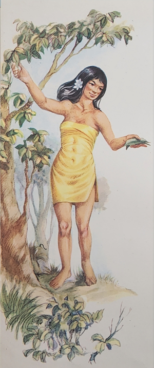
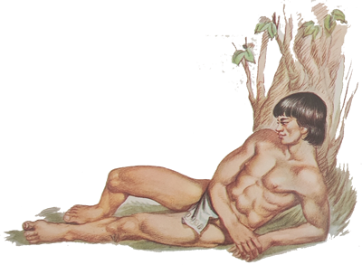
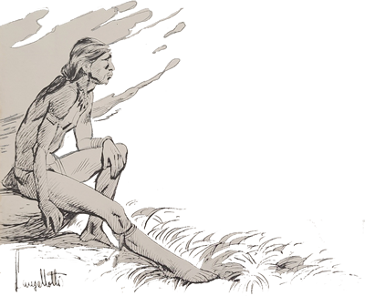
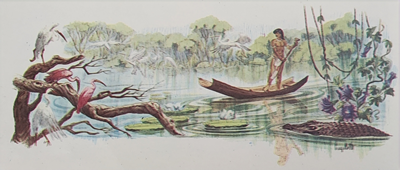
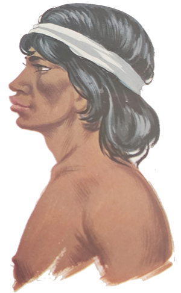

Enquanto as outras crianças brincavam correndo umas atrás das outras, Marisa conversava com o Arrelia. Os dois estavam sentados num banco tosco construído sob uma frondosa árvore. Não muito longe, alguns gaúchos, agachados em volta de pequena fogueira, tomavam chimarrão. Fazia calor e o dia estava bonito. O Arrelia comentou com ar de filósofo:
- Interessante. Veja como os nossos amiguinhos estão brincando. Sentiram-se cansados de ficar parados e procuraram movimentar-se. Olhe os gaúchos. Cansados de movimentar-se, sentem-se felizes em poderem descansar um pouco. Mas você, por que não está brincando?
Marisa suspirou e respondeu:
- Acho que estou que nem os gaúchos. Preciso descansar um pouco. Não sei como é que os outros aguentam. Temos brincado demais!
Depois de admirar uns momentos as outras crianças, o Arrelia comentou:
- Não demora muito, eles desistem. Observe como já estão desanimados. Vocês tem brincado demais mesmo. Não há quem resista.
A menina voltou os olhos para os gaúchos e exclamou:
- Como tomam chimarrão! Nunca vi ninguém gostar tanto de mate!
- É “verdaude”. Gostam mesmo.
Marisa tornou-se pensativa. Depois perguntou:
- Como será que descobriram o mate? De que modo souberam que podia ser transformado em bebida?
- É uma pergunta inteligente – respondeu o Arrelia, olhando a menina com admiração. É mesmo fascinante. Quem será que preparou o primeiro mate? Já pensou no trabalho dos antigos para descobrirem o que podia ser tomado ou comido e o que não era? O que era veneno e o que não era? Ouvi certa vez uma estória sobre o mate que explica como ele surgiu.
Marisa animou-se:
- É? Como foi?

Mal o Arrelia começou a recordar-se da estória, as outras crianças chegaram correndo, extenuadas pela brincadeira, e atiraram-se ao chão, ofegantes, sob a sombra da árvore.
- Puxa! – disse o Arrelia. Vocês dão tudo, hein? Estão que não aguentam mais!
- Nós queremos aproveitar! – respondeu Iberê. Não é sempre que a gente encontra um lugar para correr como aqui!
- Bem – disse o Arrelia voltando-se para Marisa – essa estória do mate é muito bonita.
- Ah! Comece de novo! – pediu Jaci. Nós queremos ouvir!
As outras crianças fizeram coro pedindo ao Arrelia para recomeçar a estória. Com muito custo ele conseguiu explicar-lhes que nem havia iniciado a narração. Ficaram todas em silêncio, curiosas.

- Esta lenda conta que há muitos e muitos anos uma grande tribo de índios estava de partida. O local onde eles habitavam já não servia mais. A caça era pouca e a terra já não produzia como antes.
- Sei que é triste mas temos de partir – dissera o chefe. Precisamos encontrar um novo lugar onde a caça seja fácil e a terra fértil. Nosso povo está com fome e quase não há o que comer.
Durante vários dias foram feitos os preparativos. Tinha chegado o grande momento. Lentamente, os índios foram deixando a antiga aldeia onde haviam vivido tantos anos. Que estavam tristes, estavam. Porém não viam outro jeito.
Depois de algum tempo a aldeia ficou vazia. Apenas as cabanas abandonadas e alguns pássaros que, percebendo o abandono, vieram pousar no terreiro à procura de alguma sobra de comida, que, afinal, não devia ser muita.
Não há mais ninguém. Pelo menos assim parece. De repente, os pássaros voam “assustaudos”. O couro que fechava a entrada de uma cabana fora afastado. Sai um velho índio, curvado pelo peso dos anos e de cabelos completamente brancos. Apoia-se a um bordão. Atrás dele caminha uma bonita mocinha índia. Ele é um velho guerreiro sem forças para acompanhar a tribo em sua marcha atrás de novas terras. Ela é sua filha mais nova e não teve coragem de abandonar seu velho pai, certa de que sozinho ele não poderia sobreviver. Sendo boa filha, preferira renunciar à segurança da tribo e permanecer ao lado do velho guerreiro, sem saber o que lhe reservava o futuro. Como não tinham sentido coragem para ver a partida de sua gente, haviam permanecido dentro de sua cabana.
Dava pena vê-los tão tristes. Estavam tão aborrecidos que não diziam uma palavra. O velho insistira com a filha para que fosse com os outros. Ela, porém, estava resolvida a permanecer ali, fazendo companhia ao pai.
Depois de um longo silêncio, ele insistiu:
- Vá enquanto é tempo, minha filha. Pouco me resta de vida e depois o que será de você? O que fará neste lugar abandonado? Antes ficar sozinho do que pensar no seu destino após a minha morte.
- Não fale assim, pai. Sabe que eu não teria coragem de abandoná-lo. O que faria o senhor sozinho? Morreria de fome!
Os dois continuaram a viver na aldeia e dava pena ver o esforço do índio para ser útil à filha. Lentamente, com o maior sacrifício, reunia um pouco de lenha, apanhava alguma fruta. A mocinha repreendia-o. Mas não adiantava. Ele queria ajudar de qualquer modo. Ela, então, não parava: plantava, colhia, cozinhava, procurava manter em ordem a cabana e o terreiro onde o mato, parecendo adivinhar a fraqueza da moça, estava revolvido a retomar o que fora seu. Até as onças, que antes não se aproximavam temendo a flecha e a lança dos jovens guerreiros, agora andavam urrando cada vez mais perto. A noite era cheia de sobressaltos e o dia vazio de esperanças.

- Que vida triste, não? – comentou Carlinhos. Ainda mais com onça por perto!
- Você lá, hein, Carlinhos? – caçoou Jaci.
O menino olhou para ela de cara feia e o Arrelia, muito distraidamente, continuou:
- Os meses foram passando. Veio o inverno, o sofrimento aumentou e eles sempre resistindo.
Numa triste tarde de inverno, o velho estava um tanto afastado de sua cabana, colhendo algumas frutas. O pobre assustou-se quando viu mexer-se uma folhagem próxima. Pensou que fosse alguma onça e esperou sem nada poder fazer. Para defender-se não tinha forças e para fugir não podia contar com as pernas. Ficou ali mesmo, portanto, esperando o pior. Mas em vez da onça, surgiu do meio da folhagem um homem branco muito forte, de olhos da cor do céu e vestido com roupas coloridas. Aproximou-se do velho guerreiro e disse-lhe:

- Venho de muito longe e há dias que ando sem parar. Estou cansado e queria repousar um pouco. Poderia arranjar-me uma rede e algo de comer?
O velho lembrou-se de que a comida era escassa, mas não pode recusar.
- Sim – respondeu. Venha comigo – e tomaram o caminho da cabana.
Quando chegaram lá, ele chamou sua filha, cujo nome era Iari, e apresentou-lhe o viajante:
- Este homem, minha filha, está mais cansado do que nós e também sente fome. Cuide para que nada lhe falte.
Iari acendeu o fogo e preparou tudo o que havia de comer embora soubesse que não seria fácil conseguir mais. O estranho comeu com apetite até satisfazer-se. O velho e sua filha cederam-lhe sua cabana e foram dormir numa das outras abandonadas. Iari levou sua rede, nela acomodou seu pai e dormiu no chão porque não havia outra rede e a de seu pai ficara para o viajante.
Logo cedo o velho índio encontrou o homem branco cortando lenha e fez de tudo para que ele parasse de trabalhar. O outro, porém, respondeu-lhe que já estava bem descansado e que percebera a necessidade dos dois. Terminou de cortar a lenha e seguiu em direção à floresta. Horas depois retornou com várias caças. O velho não sabia o que dizer.
- Vocês merecem muito mais! – exclamou o homem. Trataram-me com toda a hospitalidade, dando-me tudo o que possuíam!
Depois ele confessou ao pai de Iari que era um enviado de Tupã. O deus dos índios estava preocupado com a sorte daquele pai e de sua filha e mandara aquele mensageiro.
- Pela bondade que vocês possuem – disse ele – merecem receber tudo o que desejarem.
O velho animou-se:
- Posso pedir mesmo?
- Claro! Diga o que deseja!
- Queria ter um amigo que me fizesse companhia até que meus dias se findassem. Assim Iari poderia alcançar nossa tribo e ser feliz. Fico triste em vê-la aqui sozinha, sem amigas, sem uma festa, só trabalhando. Se ao menos eu tivesse mais forças! Poderia ficar sozinho. Ela não quer deixar-me porque sabe que eu não sobreviveria.
- Vou arranjar-lhe um amigo – prometeu o outro. Um amigo que lhe dará alegria e forças para o resto de seus dias.

Mostrou-lhe então uma erva estranha:
- Esta é a erva-mate. Plante-a e deixe que ela cresça e faça-a multiplicar-se. Depois ferva suas folhas e beba o chá. Novamente as forças lhe voltarão e poderá trabalhar e caçar o quanto quiser. Sua filha, se desejar, poderá ir ao encontro da tribo.
Iari foi chamada e disse que não. De qualquer modo ficaria fazendo companhia ao pai. Não poderia ser feliz em sua tribo se o deixasse abandonado.
O enviado de Tupã sorriu emocionado:
- Por ser tão boa filha, você merece uma recompensa. A partir de agora será Caá-Iari, a deusa protetora dos ervais. Cuidará para que o mate jamais deixe de existir e fará que os outros o conheçam e bebam a fim de serem fortes e felizes.
Logo após o homem partiu. Tinha dito a verdade. O velho guerreiro recuperou as forças perdidas e nunca mais passaram necessidade.

- E foi assim que o mate apareceu? – perguntou Marisa. Que engraçado!
- Foi assim – respondeu o Arrelia. Mas espere aí que ainda não terminei.
Iari vivia preocupada com o pedido do estranho. Ele queria que ela fizesse o mate conhecido. Mas como? Estavam tão longe que ali não aparecia ninguém! Ela não sabia o que fazer. Precisava transmitir aos outros aquele tesouro. E o tempo foi passando.
Numa aldeia de índios bem distante dali realizava-se uma grande festa. Os índios estavam contentes porque haviam feito uma caçada “daqueulas”. Tão cedo não iam preocupar-se mais com caçadas, não. Enquanto uns dançavam e cantavam, outros comiam e bebiam. Sobrava comida e não faltava bebida.
Depois de algumas horas de alegria, dois jovens índios, que tinham bebido mais do que deviam, começaram a discutir. Eram Piraúna e Jaguaretê. O primeiro usava um colar feito com dentes de cem inimigos que ele abatera nas guerras; o segundo era famoso por sua força e coragem. Eram os guerreiros mais fortes da tribo.
Quando alguns índios viram o que estava acontecendo, correram e procuraram acalmar os dois jovens, pois sabiam que uma briga entre eles teria resultado funesto. Depois de muito esforço, conseguiram levar cada um para um lado e a festa continuou.
Mas os dois estavam mesmo decididos a terminar a discussão que haviam iniciado. Pouco a pouco, um foi chegando perto do outro e a briga recomeçou. Desta vez apelaram para a força. Que baita confusão. Os índios mais corajosos fizeram de tudo para separá-los. Porém, quem podia com eles? Fortes como eram, cheios de ódio e com o cauim a embotar-lhes o raciocínio, pareciam duas feras e não dois homens.
A briga continua. De repente, Jaguaretê empunha um tacape e dá violento golpe na cabeça de Piraúna. Piraúna cai morto. Termina a briga e também a festa. Aí os outros perderam a paciência. Desdobraram-se em esforço e conseguiram dominar o agressor. Jaguaretê foi “amarraudo” ao poste de torturas.

Pelas leis daquela tribo, os parentes do morto podiam executar o assassino. Trouxeram o pai de Piraúna [ara que ordenasse a execução de Jaguaretê. Mas ele não quis fazê-lo. Disse que Jaguaretê só era culpado de haver bebido demais, tendo dado, assim, oportunidade a Anhangá, o espírito mau, para fazê-lo matar o amigo. Ele não deveria ser morto, portanto. Apenas expulso da tribo. Teria de viver sozinho nas matas desconhecidas, onde poderia refletir com calma sobre o que fizera.
A decisão do velho foi obedecida. Depois de haverem desamarrado o jovem guerreiro, deram-lhe permissão para que pegasse suas armas e ordenaram-lhe que partisse imediatamente. Jaguaretê obedeceu e seguiu para o exílio. Ia triste, cabisbaixo, pois o efeito da bebida estava passando e podia ver agora o mal que fizera. Seguiu seu caminho e embrenhou-se na mata.
- Eu não queria ser condenado a isso – disse Sérgio. Viver sozinho no meio da floresta! Com os bichos!
- Nem é bom pensar – respondeu o Arrelia. O pior é que ele ia ser perseguido pelo remorso. Teria anos e anos para arrepender-se do crime que praticara. Dá até “peuna”, não é mesmo?
Depois que Jaguaretê sumiu na floresta, ninguém ouviu mais falar nele. Com o tempo foi completamente esquecido. Ninguém queria saber se ele estava vivo ou morto.
Muitos anos depois quando Jaguaretê já devia estar morto de velhice, alguns índios daquela tribo que nem tinham ouvido falar nele, resolveram ir caçar naquelas matas porque a caça já estava rareando no lugar em que viviam.
Entraram pelo sertão, onde era fácil encontrar uma onça, e começaram a caçar. Aprofundaram-se cada vez mais e, muito longe, no meio da floresta, encontraram uma cabana. Ficaram bobos com o “achaudo”. Uma cabana no meio daquele sertão! Não podia ser. Quem seria capaz de fazer tal coisa? Aproximaram-se com todo o cuidado. Mesmo assim foram pressentidos e saiu da cabana um homem muito forte e sorridente. Quase que os índios fugiram correndo. Se não fosse a aparência simpática do estranho . . .
Embora tivesse os cabelos brancos, o corpo e o rosto eram de um jovem. Ele acolheu os índios com cordialidade e ofereceu-lhes uma bebida desconhecida. Sabem quem era? Era Jaguaretê, o índio expulso de sua tribo, e a bebida desconhecida era o mate.

Os índios quiseram saber por que ele vivia sozinho naquela cabana e que bebida era a que ele lhes oferecera. Jaguaretê contou-lhes o que já sabemos e depois completou:
- Assim que me vi sozinho na floresta, não aguentando mais o cansaço e o remorso, joguei-me no chão e ali fiquei pedindo a morte. O arrependimento e a saudade da minha gente me torturavam.
Fiquei muito tempo caído no mesmo lugar. Pressenti, então, que alguém estava perto de mim. Levantei a cabeça lentamente e dei com uma jovem de rara beleza e de olhar bondoso. Fitou-me com ar de compaixão e disse-me:
- Tenho pena de você porque não matou por querer e agora está arrependido do que fez. Para que possa suportar seu exílio, vou ensinar-lhe uma bebida que não enfraquece nem tira a razão como o álcool, mas fortalece o corpo e esclarece as ideias. Meu nome í Caá-Iari, a deusa protetora dos ervais.
Mostrou-me uma estranha planta e esclareceu-me:
- Está é a erva-mate. Plante-a, deixe-a crescer e faça-a multiplicar-se. Depois prepare uma infusão com suas folhas e beba o chá. Seu corpo será forte e sua mente será clara por muitos e muitos anos. Viverá muito mais do que deveria viver.
Segurei emocionado a planta que a deusa me entregara e ela ficou em silêncio. Depois, desaparecendo pouco a pouco, como se fosse de fumaça, me ordenou:
- Não deixe de transmitir a quem encontrar o que aprendeu sobre o mate.
Portanto, meus amigos – finalizou Jaguaretê – quero que levem alguns pés da erva-mate para sua tribo e que nunca deixem de transmitir aos outros o que aprenderam.
- Não vem conosco? – perguntou um índio a Jaguaretê.
- Não, não vou – respondeu-lhe Jaguaretê pensativamente. Agora é tarde. Todos os que eu conhecia na tribo já devem ter morrido e eu seria um estranho. Também é preciso que eu cumpra meu exílio. Além disto, estou tão habituado com este sertão que me sinto parte dele. Mas não estou sozinho. Tenho o mate para alegrar minhas horas de solidão.
O Arrelia esticou as pernas, passeou os olhos pelo céu e finalizou:
- Aqueles índios voltaram e contaram aos outros o que haviam ouvido. O mate foi plantado e multiplicou-se. Outras tribos aprenderam o seu uso e ele chegou até nós.
- Puxa! – exclamou Iberê. Depois dessa estória, não vejo a hora de tomar chimarrão.
As outras crianças concordaram com ele.